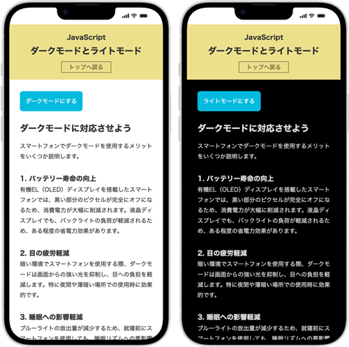

ダークモードに対応
ライトモードとダークモードを切り替える

テキスト
ダークモードにする ダークモードに対応させよう スマートフォンでダークモードを使用するメリットをいくつか説明します。 1. バッテリー寿命の向上 有機EL（OLED）ディスプレイを搭載したスマートフォンでは、黒い部分のピクセルが完全にオフになるため、消費電力が大幅に削減されます。液晶ディスプレイでも、バックライトの負荷が軽減されるため、ある程度の省電力効果があります。 2. 目の疲労軽減 暗い環境でスマートフォンを使用する際、ダークモードは画面からの強い光を抑制し、目への負担を軽減します。特に夜間や薄暗い場所での使用時に効果的です。 3. 睡眠への影響軽減 ブルーライトの放出量が減少するため、就寝前にスマートフォンを使用しても、睡眠リズムへの悪影響が比較的少なくなるとされています。 4. 画面の見やすさ向上 明るい環境では逆効果になることもありますが、暗い場所や夜間では、コントラストが改善され文字が読みやすくなります。 5. スタイリッシュな外観 多くのユーザーが、ダークモードの洗練された見た目を好む傾向があり、アプリやインターフェースがより現代的に感じられます。 ただし、明るい屋外などでは通常のライトモードの方が見やすい場合もあるため、環境に応じて使い分けることが重要です。
JavaScript 記述ポイント
script.js
const btn = document.querySelector('#btn'); const body = document.body; btn.addEventListener('click', () => { body.classList.toggle('dark-theme'); // もしボタンのテキストが「ダークモードにする」になっているなら if(btn.textContent === 'ダークモードにする'){ // クリックされた時に「ライトモードにする」に変更 btn.textContent = 'ライトモードにする'; // そうでないなら（「ライトモードにする」と表示されているなら） } else { // クリックされた時に「ダークモードにする」に戻す btn.textContent = 'ダークモードにする'; } });
① ボタンの要素を取得
const btn = document.querySelector('#btn');
意味
HTMLの中にある id="btn" の要素を取得しています。例（HTML）
<button id="btn">ダークモードにする</button>
ポイント
- document → HTML全体
- querySelector() → 指定した要素を探す
- #btn → id="btn"
つまり
btnという変数にボタン要素を入れる
② body要素を取得
const body = document.body;
意味
- HTMLの bodyタグを取得しています。
ポイント
- 後で bodyにクラスを追加してテーマを変更します。
③ クリックイベントを設定
btn.addEventListener('click', () => {
意味
- ボタンがクリックされた時に処理を実行する
| コード | 意味 |
|---|---|
| addEventListener | イベントを登録 |
| 'click' | クリックされた時 |
| ()=>{} | 実行する処理 |
つまり
ボタンをクリックしたらこの中の処理を実行
④ ダークモードを切り替える
body.classList.toggle('dark-theme');
意味
- bodyに dark-themeクラスを付けたり外したりする
toggleの動き
| 状態 | 結果 |
|---|---|
| クラスなし | 追加 |
| クラスあり | 削除 |
【例】
- クリック前
<body>
- クリック後
<body class="dark-theme">
⑤ if文（条件分岐）
if(btn.textContent === 'ダークモードにする'){
意味
ボタンの文字がダークモードにする
なら処理を実行する。
textContent
要素の 文字を取得するプロパティ【例】
<button>ダークモードにする</button>
↓
btn.textContent
【結果】
ダークモードにする
⑥ ボタンの文字を変更
btn.textContent = 'ライトモードにする';
意味
ボタンの文字をライトモードにする
に変更する。
クリック前
ダークモードにする
クリック後
ライトモードにする
⑦ else（それ以外）
} else {
意味
もしダークモードにする
じゃないなら
つまり
ライトモードにする
の場合。
⑧ ボタン文字を元に戻す
btn.textContent = 'ダークモードにする';
意味
ボタンの文字をダークモードにする
に戻す。
⑨ イベント処理終了
});
ここで
クリックされた時の処理
が終わります。
このコードの全体イメージ
クリック
↓
ダークテーマON/OFF
↓
ボタン文字変更
記述例
index.html
<html lang="ja"> <head> <meta charset="UTF-8"> <meta name="viewport" content="width=device-width, initial-scale=1.0"> <title>ダークモードとライトモード</title> <link rel="stylesheet" href="css/style.css"> <script src="js/script.js" defer></script> </head> <body> <!-- header --> <header class="header"> <h1>JavaScript<br>ダークモードとライトモード</h1> <p class="btn"><a href="../index.html">トップへ戻る</a></p> </header> <!-- /header --> <!-- main --> <main class="main"> <div class="container"> <button id="btn">ダークモードにする</button> <h2>ダークモードに対応させよう</h2> <div class="content"> <p>スマートフォンでダークモードを使用するメリットをいくつか説明します。</p> <h3>1. バッテリー寿命の向上</h3> <p>有機EL（OLED）ディスプレイを搭載したスマートフォンでは、黒い部分のピクセルが完全にオフになるため、消費電力が大幅に削減されます。液晶ディスプレイでも、バックライトの負荷が軽減されるため、ある程度の省電力効果があります。</p> </p> <h3>2. 目の疲労軽減</h3> <p>暗い環境でスマートフォンを使用する際、ダークモードは画面からの強い光を抑制し、目への負担を軽減します。特に夜間や薄暗い場所での使用時に効果的です。</p> <h3>3. 睡眠への影響軽減</h3> <p>ブルーライトの放出量が減少するため、就寝前にスマートフォンを使用しても、睡眠リズムへの悪影響が比較的少なくなるとされています。</p> <h3>4. 画面の見やすさ向上</h3> <p>明るい環境では逆効果になることもありますが、暗い場所や夜間では、コントラストが改善され文字が読みやすくなります。</p> <h3>5. スタイリッシュな外観</h3> <p>多くのユーザーが、ダークモードの洗練された見た目を好む傾向があり、アプリやインターフェースがより現代的に感じられます。<br> ただし、明るい屋外などでは通常のライトモードの方が見やすい場合もあるため、環境に応じて使い分けることが重要です。</p> </div><!-- /.content --> </div><!-- /.container --> </main> </div><!-- /.container --> </main> <!-- /main --> <!-- footer --> <footer class="footer"> <p id="update">更新日：xxxx年x月x日</p> </footer> <!-- /footer --> </body> </html>
style.css
@charset "UTF-8"; /* -------------------------------- reset -------------------------------- */ *, *::before, *::after { margin: 0; padding: 0; box-sizing: border-box; } ul { list-style: none; } a { color: inherit; text-decoration: none; } img { max-width: 100%; vertical-align: bottom; } html { font-size: 100%; } /* -------------------------------- body -------------------------------- */ body { display: grid; grid-template-rows: auto 1fr auto; min-height: 100vh; background-color: #fff; color: #333; font-size: 1.0rem; font-family: sans-serif; line-height: 1.8; } /* -------------------------------- header -------------------------------- */ .header { padding: 20px 0; background-color: #ece18b; color: #333; text-align: center; } .header h1 { font-size: 1.5rem; } .header > h1::first-line { font-size: 1.125rem; } .btn { display: inline-block; width: 100%; margin-top: 10px; border: #fff; } .btn a { padding: 6px 20px; border: 2px solid #8f8851; color: #8f8851; font-weight: 700; transition: all .3s; } .btn a:hover { padding: 6px 20px; background-color: #fff; color: #8f8851; } /* -------------------------------- footer -------------------------------- */ .footer { padding: 10px; background-color: #ece18b; color: #333; text-align: center; } /* -------------------------------- main -------------------------------- */ .container { width: min(90%, 960px); margin: 0 auto; padding: 2rem 0.5rem; transition: .5s; } h2 { margin-bottom: 20px; line-height: 1.3; } .main_content > p { text-align: justify; } /* --------------------------------- theme --------------------------------- */ .dark-theme { background-color: #000; color: #ddd; } #btn { background: #0bd; padding: 1rem; margin-bottom: 2rem; font-size: 1rem; color: #fff; border-radius: 8px; border: 0; cursor: pointer; }